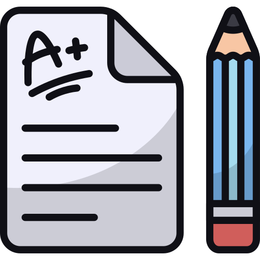

Resources

Piazza
Piazza is a discussion board for our course. We encourage you to post questions, read and answer the questions your classmates have posted!


Past Test
Take a look at the past tests to be prepared for your midterm and final exam! We encourage you to try writing the past tests first, and then look at the solution.